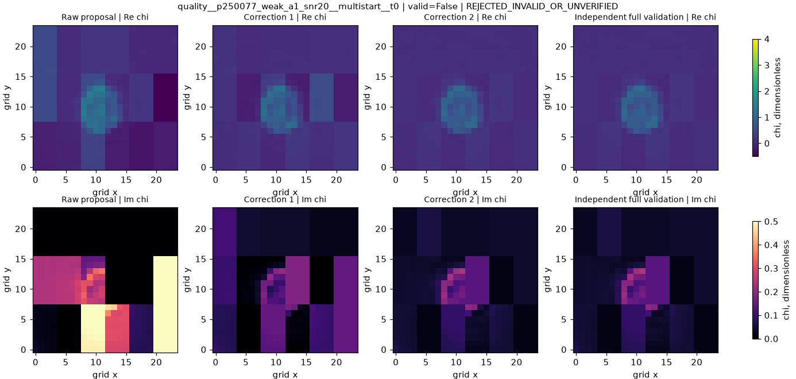
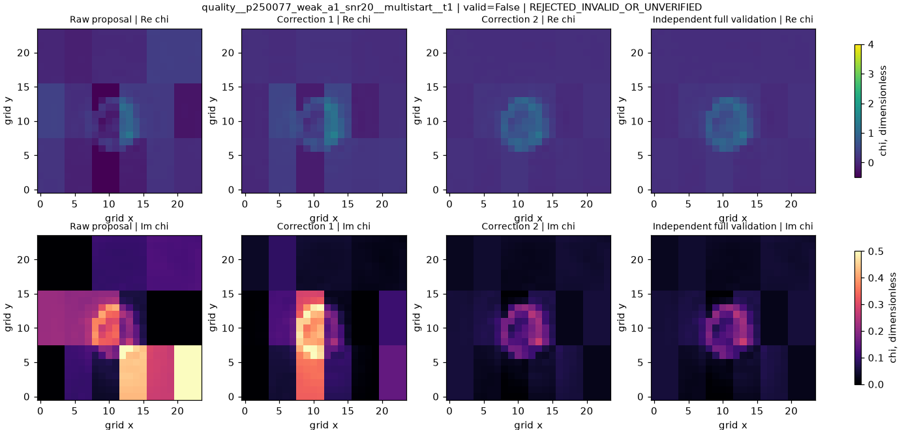
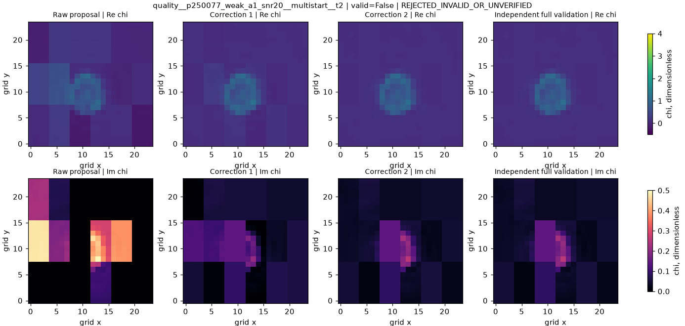

Candidate-only. Every image uses identical physical Re/Im chi color limits. Failed raw proposals remain visible. Truth never guides online selection.
Frozen active archive IDs: base__p250077_weak_a1_snr20
Full-valid: False; archive status: REJECTED_INVALID_OR_UNVERIFIED; missing stages: none

Full-valid: False; archive status: REJECTED_INVALID_OR_UNVERIFIED; missing stages: none

Full-valid: False; archive status: REJECTED_INVALID_OR_UNVERIFIED; missing stages: none
